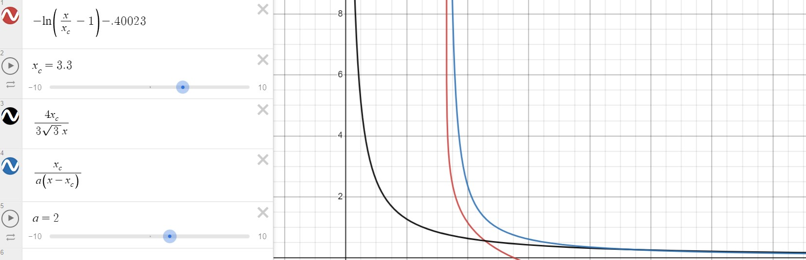
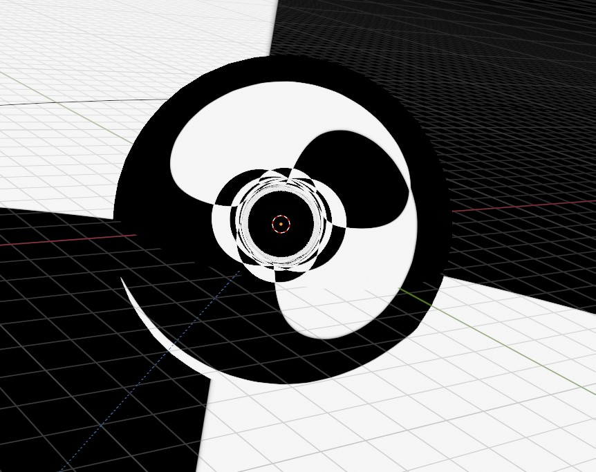
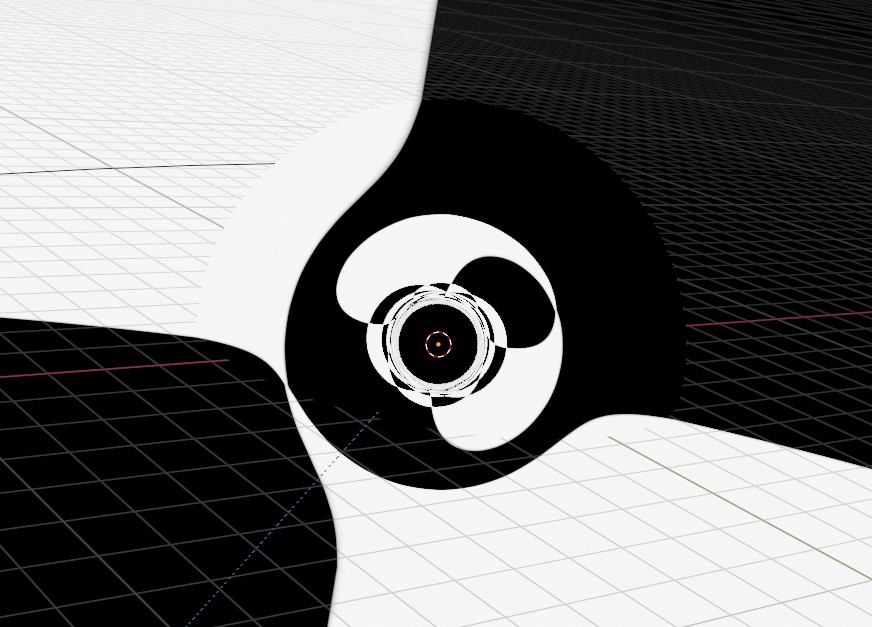
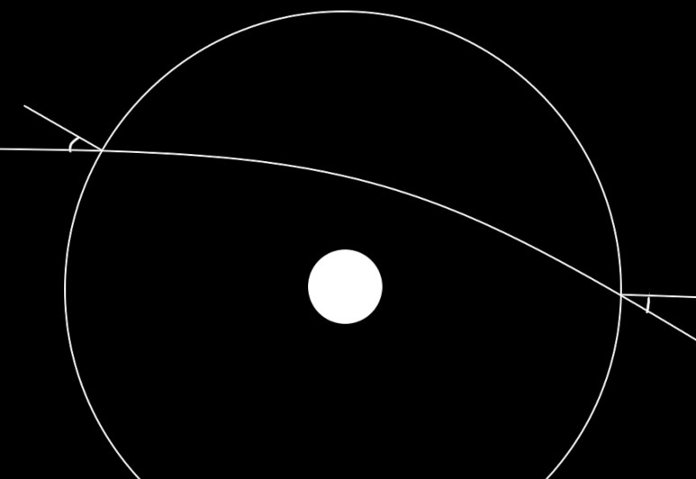
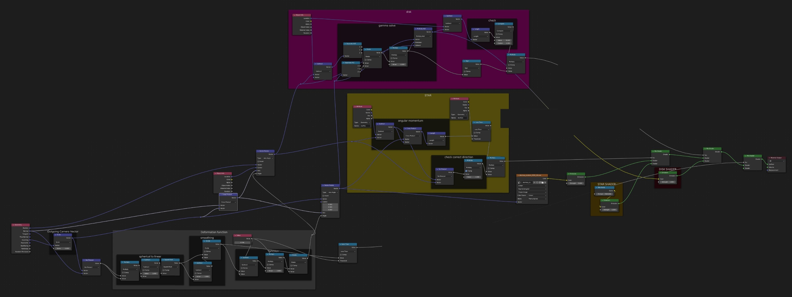
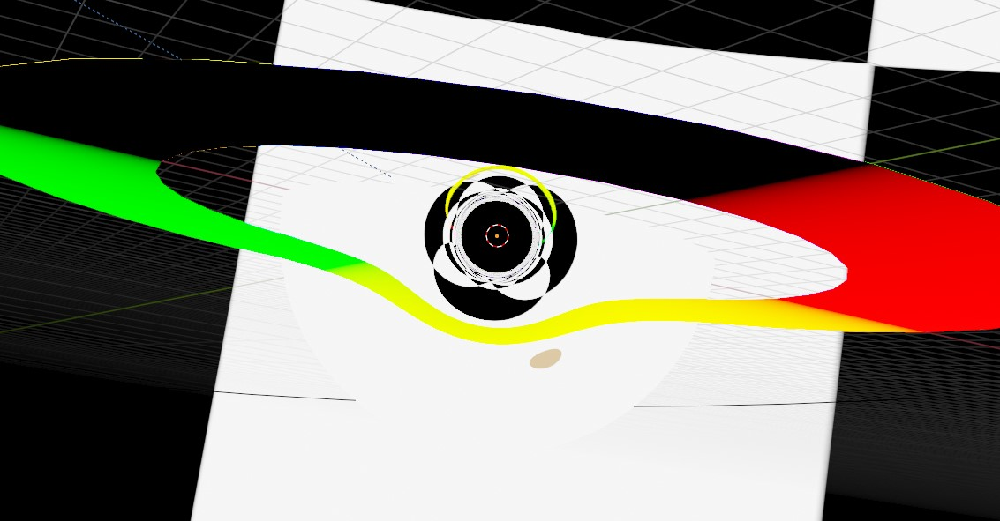

Lensing rendering in real time in the browser using webGL. Base code taken from the cs418 class at UIUC, but has been ripped apart and restitched together to function. Click and drag to move the camera around.
Real time lensing animation that was built initially in Blender. This was made as a contribution to POINTVR. Eventually this was ported to a c# shader to be used in the Unity engine. The mathematics is simply enough that a version should be able to run in browser, Something that will be completed at a later date.
My initial workflow involed finding the impact parameter(b) to use to solve for the inflection angle(alpha). These came from some prior work I had with orbital mechanics and seemed like a good initial jumping off point.
The impact parameter is the 'distance of closest approach' if no forces acted upon the 2 objects being discussed. The key I found to being able to find the impact parameter and build a good looking model was to do the math on a larger sphere.
This sphere is the maximum value that we should consider the black hole lensing to be relavant. any light that has a 'larger closest approach'(larger impact parameter) is too far away for black hole lensing to have any meaningful impact on its direction.
Doing some trigenometry on the larger sphere gives us a solution for the impact parameter. One independant variable does come out(the radius of the sphere). This can be ralted to the mass of the black hole being used, but for most cases it can be set to a constant that looks good.
I was able to find 2 different functions from 2 different papers which give a deflection angle from the impact parameter. One paper gave an approximation for large b while the other gave an approximation for values close to the event horizon.
With these 2 approximations I built a new function to mimic both as closely as I could.
The angle has been defined, but the direction of deflection is still needed. For this I used the axis-angle representation since I already had the angle and needed just to solve the axis.
The things I knew was that the axis lived on the tangent bundle of the sphere I'm using and that the axis should be orthogonal to the light source. Both of these can be solved with a cross product
Thats all that It should take. This is the first render.
Almost good. The sphere should be seemless with the rest of the background which this doesn't have. A smoothing function is needed to change the impact parameter to go from [0,r]→[0,∞]. i just used x/(1-x) as a smoothing function.
Much better
Through some mathematical voodoo magic. I found a symmetry in the axis angle roations. Originally I built the rotate to shift looking direction of the light, but you can also use that rotation on the location the light touches the sphere and use that to find its exit location. What I used to convince myself is the fact that the entry angle and the exit angle should be the same in relation to the sphere normal. Basically, a light particle shouldn't care if it goes forwards along the curve or backwards, so each direction should give the same result. You should be able to see someone through the lensing and they would see you from the same direction, just inverted.
With the exit position and an exit vector, that's all that is needed to do rudimentary ray tracing. I'll leave the mathematic proof away, but a plane and a sphere are semi-easy to solve for.
 But using these are more difficult in creating a good render, so I didn't use them in the final render. It should mean that the shader could be built farther, something similar to reflections, but I haven't built that part yet and I expect I wont.
Video produced to try and explain the process.